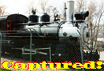
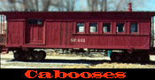
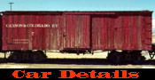
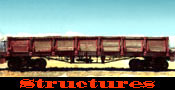
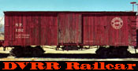
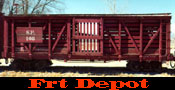
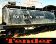
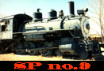
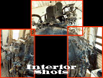
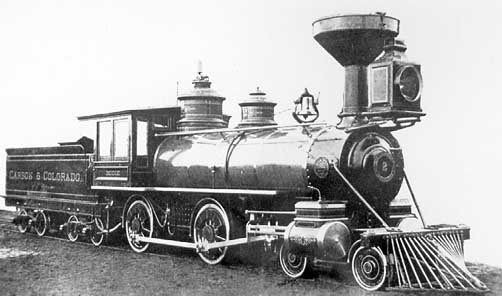

This site concentrates on the Carson & Colorado Railroad (Southern Pacific Narrow Gauge RR) and all of its predecessors. As the Southern Pacific bought and consolidated other lines, the equipment used over the years was quite a diverse mixture. There is another nice site for the C&C at Narrow Gage on the Net.

A treat from P Hoffman - Carson & Colorado No. 2, The Bodie
SPng Outdoor Railroad PhotosC&C Plans and Drawings at CSRMDec 98: Van Austin in the Salt Lake City area has finished his 7 1/2 inch gauge X-1 diesel "Little Giant" for his outdoor rideable railroad. It looks really sharp to me!
Side view
From the rear
3/4 View, brakeman's side
Closeup, center area
Front view, closer
Closeup, Shutterstat area
Closeup, cab from rear
Another closeup of the cab
C&C Outdoor Railroad PhotosJuly 98: I added a list of drawings available from the CSRM Library in Sacramento. I also added a list of plans available from Coronado Scale Models at the bottom of this page.
June 98: Dave Goodson has created an outdoor version of a Carson and Colorado line that might have been.
Photos
Feb 99: 230 SPng Photos by Orin Palmer
May 98: I have added a lot of photos from the 40s-90s.
Surviving Equipment
May 98: I have added a list of surviving equipment.
Structures List
May 98: Cliff Mestel has provided a listing of photos in many books that show SPng structures.
SPng Email List
Subscribe to SPng
SPng Historical Society
SPng Conventions
Membership Application (PDF) April or May: Every year there is a convention for the SPng and it has lots of info, tours, and other great stuff. Watch the SPng list for current plans.
SPng Historical Society Journal Index
May 00: Dale Darney has provided an Index to the SPNGS Journal.
List of Drawings
Thanks to contributors Jim Reese and Curtis Ferrington for assisting in fleshing out this list. Thanks too to Russ Reinberg for the Outdoor/Finescale info.
-=-=-=-=-=-
- Model Railroader Magazine
- Aug 1964 -- Side Dump Gravel Hopper
- Sep 1965 -- Laws Turntable
- Jan 1967 -- Stockcar
- Sep 1970 -- SP#8 4-6-0
- May 1977 -- Flatcar
- May 1983 -- 4-6-0 no. 12, #12 Baggage Car(Photo)
- Dec 1983 -- "Modeling the Great American Desert"
- Outdoor Railroader / Finescale Railroader Magazine
- OR Feb 1993 -- Section Car House
- OR Apr 1993 -- Tank Car 173, p. 57
- OR Oct 1993 -- Nevada County Narrow Gauge Number 11
- OR Aug 1994 -- Stock Car Number 166
- OR Oct 1994 -- Boxcar Number 132
- OR Jun 1995 -- Combination Car Number 16
- OR Jun 1996 -- Flanger-Snowplow 108
- OR Oct 1996 -- Boxcar Number 338
- FR Feb 1997 -- Stock Car Number 174
- FR Jun 1998 -- Box Culvert
- FR Aug 1998 -- Turntable
- FR Aug 1998 -- Wheel & Truck car 1A
- FR May 1999 -- Perlite Boxcar No. 72, p. 75
- FR Jul 1999 -- Boxcar No. 38
- Railroad Model Craftsman
- Jan 1952 -- Photo of Owenyo transfer table, p16
- Sep 1959 -- Photos of stock cars #150 and #169, p16
- Dec 1959 -- Photos and plans for boxcar #131
- Jan 1960 -- "SP Cattle Car", p46 Plans for stock car #154 and photo of end of #150
- Feb 1960 -- "20 ton stake flat car" p35 plans for #317 photo a-bottom gon #305
- Mar 1960 -- Plans and Photos of gon #305
- Apr 1960 -- "SP NG Tanker" plans and photos of #353, photo of facilities at Owenyo
- May 1960 -- Plans for horse car #54, photos of bax car #54, facilities at Owenyo
- Aug 1960 -- plans for #172 stock car
- Oct 1960 -- "SP Caboose" p35 drwgs and photos of #401 after 1954 rebuild
- Nov 1960 -- Composite end cattle car, p33 plans and photo #166
- Mar 1962 -- C&C combine p34 plans for #17, incl int.
- Feb 1961 -- Caboose no.401
- Mar 1961 -- Cover photo and photo of George Turner's layout
- Jun 1961 -- Stockcar, gondola/flat, horse car, Victor Gold Mining ore car, and caboose #401 (pre & post 1954 rebuild)
- Jul 1961 -- Combine no.17
- May 1964 -- "Passing of the Iron Ponies" p17 photo of Owenyo and Laws, plans for grain door box #86, specs for side opening gon similar to #305 and for gon #339
- Jul 1987 -- "The Saga of an SP box Car" p61 plans and history of box car #5
- Jan 1993 -- Culvert
- Apr 1993 -- Kitbash a narrow gauge boxcar
- Sep 1989 -- Nevada County Narrow Gauge 2-8-0 #9 (originaly NCO #14, then SPNG #1, NCNG #9, US NAVY L-17 (converted to 0-8-0), currently MIA in the Philipines. A side note is that this is quite possibly the largest narrow gauge steam engine built for a California Railroad.
- Narrow Gauge and Short Line Gazette
- May/Jun 1975 -- Cover Photo #8, 4-6-0
- Mar/Apr 1978 -- Short Line and Narrow Gauge Rails, c1937
- Mar/Apr 1980 -- Hawthorne and Moundhouse depots
- Mar/Apr 1981 -- NCO coaches #2, #3
- Sep/Oct 1982 -- Tonopah RR 2-6-0 #1
- Mar/Apr 1983 -- "The Keeler Branch", "Laws, CA in Sn3", SP Narrow Gauge Stockcar(Almost)
- May/Jun 1985 -- SPng 4-6-0 #17, 4-6-0 #13 in HOn3
- Jul/Aug 1985 -- C&C flat car
- Jan/Feb 1986 -- Combine #1009, Caboose #401.
- Nov/Dec 1989 -- SPng 4-6-0 #22
- Mar/Apr 1992 -- The other SP narrow gauges were not "Slim Princesses"
- Mar/Apr 1992 -- Southern Pacific MOFW #2, a 3-foot gauge Porter 0-4-0T
- Sep/Oct 1992 -- Stockcar
- Jul/Aug 1993 -- SP Combine #400
- Nov/Dec 1993 -- "A" frame hopper car
- May/Jun 1994 -- Plans for SP Baggage-Mail-Caboose #12
- Mar/Apr 1997 -- Nevada County Narrow Gauge #7 (C&C #4, one of the original 8 bought.) Though it's gone through a few changes at this point of it's life (steel cab, new boiler, 41" instead of original 44" wheels) the running gear is still the same.
- S Gaugian
No. 5, 1984 -- Build the SP little Giant p44 plans,history of diesel X-1
- Slim Gauge News
Winter 1973, Vol. 3, #4 "SP Narrow Gauge, Pt 1 Spring 1974, Vol. 4, #1 "SPNG today" photos, Laws equipment, notes on several cars and Laws turntable, drawings of box #26 and photo NCO truck and drawings.
Many issues of the SPNG Society newsletter had plans.
The Southern Pacific Narrow Gauge Society:
Editor: Brian Norden PO Box 3012 Industry CA 91744 626-962-2754 Back issues and information: Cliff Mestel 12874 County Road 314B Buena Vista, Colorado 81211-=-=-=-=-=-
Classic Miniatures has a kit for the Keeler Engine House in HO scale. It is listed as Kit Number 32401. It will also be offered in S scale very soon. Also available is the Laws Depot in HO scale, kit number 31415. Look in the CMHO section.-=-=-=-=-=-
The USGS also had a special series offer of the early 1950s quadrangles for the SPNG in the Owens Valley. They are Keeler, Independence, New York Butte, Waucoba Mtn., Bishop, and Big Pine quadrangles.-=-=-=-=-=-
Also of interest is the plan service that Herman Darr has (Darr's Scale Models). He listed 17 different plans in August, 1987.Darr's plans and many others are in this list from Coronado Scale Models (courtesy of Cliff Mestel):
Coronado Scale Models 602-254-9656 1544 East Cypress Street Phoenix, Arizona 85006 Coronado Plans - 1/4" scale: F-6 28' Box car #23 (ex NCO) $1.00 F-7 28' Gon, orig & rebuilt, #225 & 199 1.00 F-8 30' "A" Frame coke car #218 1.00 F-18 31' Stock car #152 (ex NCO) 1.00 D-1 Data sheet on 4-4-0's 1.00 D-2 Data sheet on 2-6-0's 1.00 D-5 Data sheet on car lettering 1.00 E-10 Caboose-combine 1.50 P-2 Combine #25 1.50 L-1 #9, 4-6-0 (ex NCO) 1.50 Robert Schlechter Drawings - 1/4" scale: R-2 Tank car #352 2.00 Herman Darr Drawings - 1/4" scale: SP-1 Box car #74, 28' 1.50 SP-2 Stock car #153, 28' 1.50 SP-3 Wheel & truck car #1A 1.50 SP-4 Crew car #1D 1.50 SP-5 Box car #131, 28' 1.50 SP-6 Section car house, Keeler 1.50 SP-7 Water car #61, 26', ex NCO 1.50 SP-8 Flat car #259, 30' 1.50 SP-9 Box car #338, 28', ex LTR&T 1.50 SP-10 Gondola #258, 30' 1.50 SP-11 Tank car #353, ex NCO 1.50 SP-12 Stock car #184, 37', ex NCO 1.50 SP-13 Gondola #225, 28' 1.50 SP-14 Stock car #174, 30', ex NCO 1.50 SP-15 Stock car #166, 30' 1.50 SP-16 Stock car #160, 30' 1.50 SP-17 Wood box culvert (3/8" scale) 1.50 SP-18 Tool car 1C 1.50 SP-19 Perlite box car #72, 28' 1.50 SP-20 C&C #306 "tin box car", 25' 1.50 SP-21 Box car #132, 28' 1.50 SP-22 Box car #17, 28' 1.50 SP-23 Box car #7, 28' 1.50 SP-24 Box car #38, ex F&CC-NCO 1.50 SP-25 Tank car #173, 30' 1.50 SP-26 A-frame gondola #339, 37' 1.50 SP-27 C&C flat car #105, 22' 1.50 SP-100 Baggage-mail car #12, ex SPC #9 2.25 SP-103 Combination #16, ex SPC #1010 2.25 SP-104 Combination #7 & 17, 40' 2.25 SP-202 Caboose #401 w/details 3.50 Plan Packs P-2 - Flat #259 Gondola #225 Stock #160 Box #131 Perlite Box #72 6.00 P-3 - Wheel & truck #1A Tool #1C Crew #1D Water #61 Keeler section car house box culverts 7.00 P-6 - Box #7 Box #17 Box #132 Stock #166 Gondola #339 Caboose #401 8.00 David Braun Drawings - 1/4" scale: NCO-1 Box car #661, 30', ex F&CC 1.50 NCO-3 Stock car #170, 30' 1.50 NCO-3a Stock car lettering for SP 1.50 NCNG-6 Flat car #413 1.50 SP-1 Flat car #259, 30' 1.50 SP-2 Tank car #173, 30' 1.50 SP-3 Stock car #160, 30' 1.50 SP-4 Box car #37, ex F&CC-NCO 1.50 SP-5 Gondola #28, 28' 1.50 SP-6 Domeless tank car #61 1.50 SP-7 Stock car #150 1.50 SP-8 Box car #1, 28' (as at Bakersfield) 1.50 Coronado has a plan catalogue available on request.

Comments?
Email me

Back to Nn3

Back to SLIM RAILS

To da trains!

©2002 blanchard design, all rights reserved